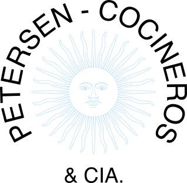
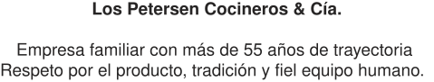
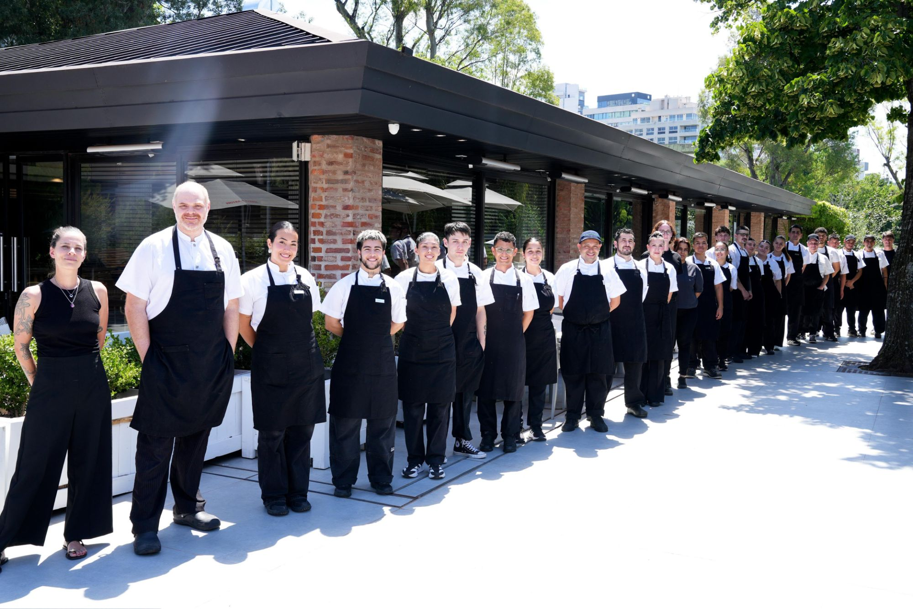

Cuidamos y mejoramos el ánimo de las personas.
Lo hacemos a través de la cocina y la producción: alimentación en empresas, catering, restaurantes, alimentos elaborados, formación de equipos y producción propia a campo.
Del campo a la mesa.


Carne de exportación con 20 días de maduración, huevos pastoriles y rebozado propio de focaccia, panko y centeno orgánico. De nuestra cocina a tu freezer.
Trabajamos con harinas orgánicas, masa madre integral y fermentación retrasada en frío. Ese proceso desarrolla el color durante el horneado, y el color es buena parte del sabor de un pan. Sin azúcares, materias grasas ni extractos agregados: solo harina, agua, sal y tiempo.
La trazabilidad es lo primero que miramos: de qué campo viene, quién lo crió, qué comió. Recién después hablamos de maduración y de corte. Angus criado a pasto.
Nos encanta producir, y sobre todo nos gusta saber de dónde viene cada cosa. Trabajamos con productores que conocemos por nombre, en campos que visitamos, con animales criados como corresponde. Nada de eso es rápido ni se puede apurar. Pero cuando la materia prima es buena de verdad, el resto del trabajo se vuelve más simple.
Cuidamos y mejoramos el ánimo de las personas.
Lo hacemos a través de la cocina y la producción: alimentación en empresas, catering, restaurantes, alimentos elaborados, formación de equipos y producción propia a campo.
Del campo a la mesa.
